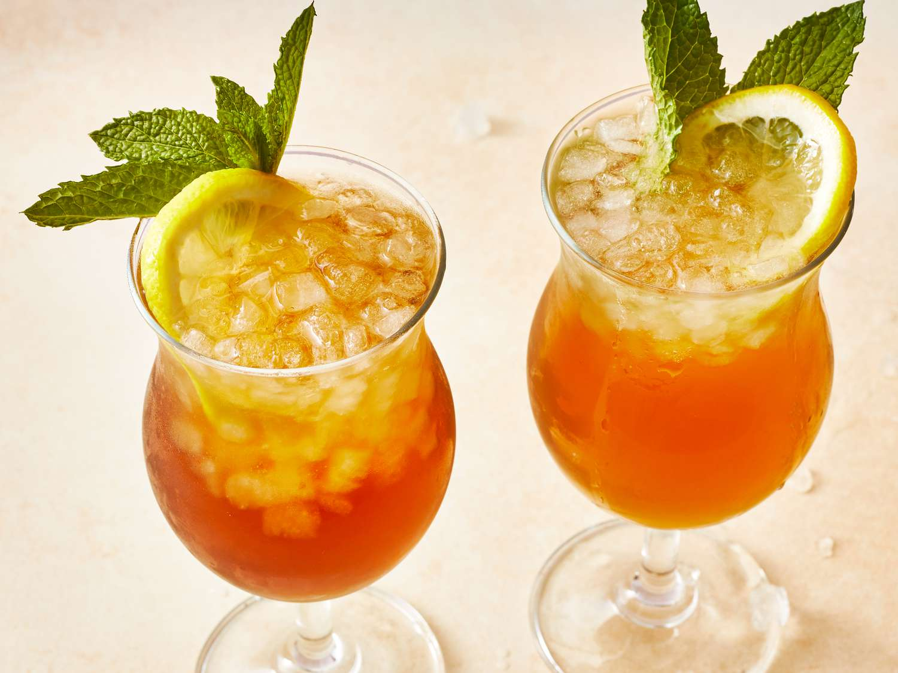

Long Island Iced Tea

Description
One thing must be cleared up about the Long Island Iced Tea straight away: It is living a lie. For starters, it's not entirely clear that it's actually from Long Island. That's debatable. But, folks, it is most assuredly not tea. You will not find a drop of tea in this cocktail. But don't hold that against it. Read on to learn how to make this 5-star recipe for Long Island Iced Tea.
Ingredients
- ½ fluid ounce vodka
- ½ fluid ounce rum
- ½ fluid ounce gin
- ½ fluid ounce tequila
- ½ fluid ounce triple sec (orange-flavored liqueur)
- 1 fluid ounce sweet and sour mix
- 1 fluid ounce cola, or to taste
- 1 lemon slice
Directions
- Gather all ingredients.
- Fill a cocktail shaker with ice. Pour vodka, rum, gin, tequila, triple sec, and sour mix over ice; cover and shake well.
- Pour cocktail into a Collins or hurricane glass; top with splash of cola for color.
- Garnish with a slice of lemon and a few mint leaves. Enjoy!
Home